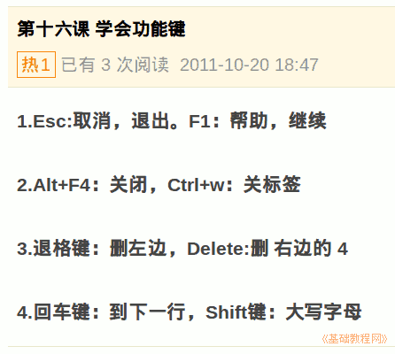

2011-2012 第一学期七年级电脑操作基础教学课程设计
作者：TeliuTe 来源：基础教程网
十六、学会功能键 返回目录 下一课学习目标：学会常用的键盘按键；
注意事项：记住自己常用的操作键；
1、学会功能键
1）最上面一排里的 Esc 是取消，F1 是帮助；
2）Alt+F4,关闭窗口，Ctrl+W，关标签；
3）退格键是删左边，Delete 是删右边；
4）回车键，到下一行，Shift键，大写字母；

课后记 2011-10-20 19:23：
进去之前想想没什么好讲，就让别着急学习要认真本节学习了功能键的基础知识，如果你成功地完成了练习，请继续学习下一课内容；
本教程由86团学校TeliuTe制作|著作权所有
基础教程网：http://teliute.org/
美丽的校园……
转载和引用本站内容，请保留作者和本站链接。